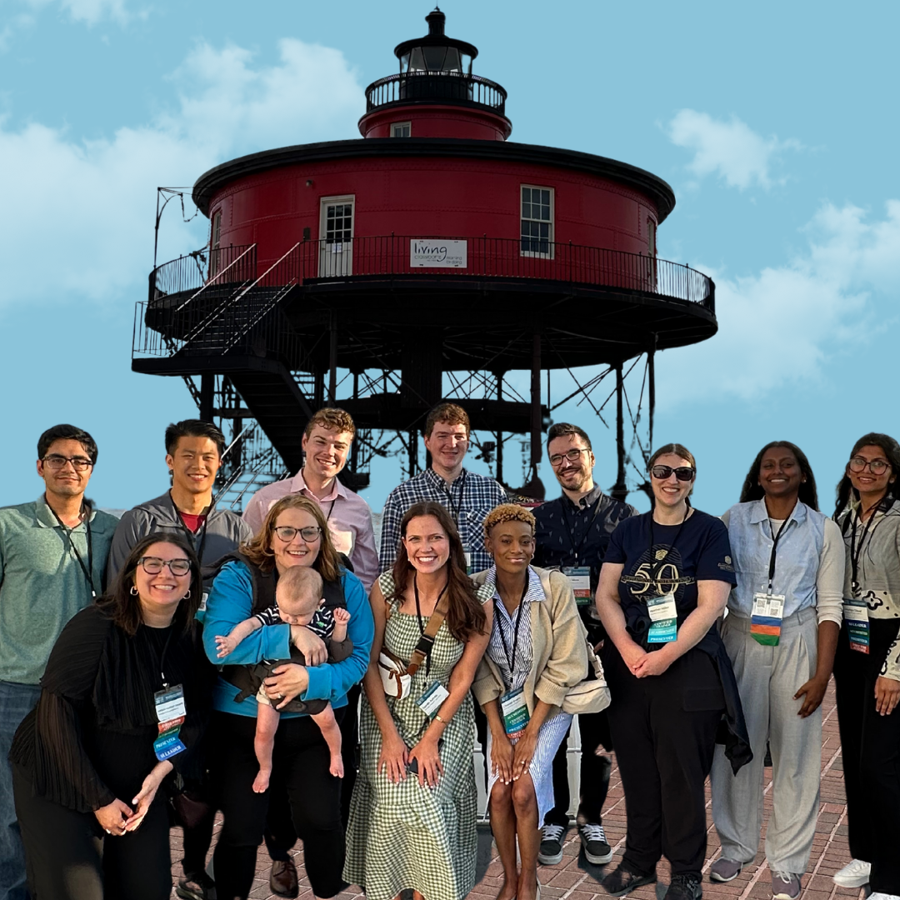

Career Projects
Training
Becoming a Certified Trainer for the ICSI created opportunities for me to increase my knowledge of proper facilitation strategies for both in-person and online engagement. It also allowed me to see the different perspectives of other professionals in the field. Learning the core values of supplemental instruction and facilitation also helped me in my on-campus role as a Coordinator; giving me the skills and tools needed to have engaging training sessions. These skills were also applicable during workshops where the target audience was usually students who have never utilized academic support services before. In order to become certified you must observe two days of training, each day led by a different facilitator. Then, you must practice facilitating activities each day, under the guidance of another Certified Trainer. Lastly, you’ll experience serving as a co-facilitator, receiving feedback on each step in the process. This cycle of training and feedback creates opportunities for self-reflection and growth as you are able to personally highlight your own “glows” (things that are going well), and “grows” (areas of possible growth). Since achieving certification in July 2023, I have not only facilitated online training every other month but have also facilitated regional training in Florida, California, and Puerto Rico.

Marketing
In any field, it is important to make data-informed decisions to meet your goals. In my role as an Academic Support Coordinator, I was tasked with creating a quarterly newsletter/annual report to showcase the qualitative and quantitative data regarding our Supplemental Instruction and Tutoring programs each semester. The type of data shown includes the mean GPAs of students who use these services versus students who don’t, written feedback from the students who do use these services, and how student leaders working in these roles gain transferable skills that can be applied in any career pathway. This report allows for key stakeholders to see the impact of academic support and how to adapt to the needs of the students being served. Post-covid, there was a period of time where virtual opportunities for engagement were preferred but within the past two years, there has actually been a trend at our institution for more in-person opportunities. I have also seen trends where students regularly request support for specific courses more in the fall semester as opposed to the spring, which allows us to determine how many student leaders are needed each semester to support a singular course. Being able to adapt accordingly is so important and this also includes other marketing options. Some students mentioned in feedback forms that they were unable to figure out how to access these resources so, to increase awareness, we created social media accounts and regularly featured our student leaders, SI session/tutoring information and study tips. We also made sure to regularly visit classes to advertise our services and connect with not only the students but the faculty as well. Lastly, we increased the number of workshops hosted each semester to provide additional opportunities for engagement.

Conference Planning
Serving as Assistant Director of the ICSI means participating in the planning of the International Conferences on Supplemental Instruction, which take place every two years. So far, I have had the opportunity to help plan one full conference (Baltimore 2024), and am currently planning our next conference (Portland 2026). This means serving as the Chair of a conference committee (keynotes, proposals, marketing, climate, awards, sponsorships). This year, I am the chair of the Climate & Participant Engagement committee and also one of three members on the Marketing committee. My role includes curating excursions for each day of the conference, creating a volunteer schedule based on the news of the other committees, creating networking opportunities within the conference schedule, and also marketing any relevant conference news across various listserv, newsletters, and social media platforms. Typically, there are around 400 attendees at the conference each year, post-covid. We are currently looking to increase the number and type of attendees who are upper-level administrators, from other peer academic support programs, or use the SI model in their training. Overall, the main goal of the committee chair is to help contribute to creating an enjoyable experience for key stakeholders. These stakeholders are both students leaders and oftentimes, their supervisors. Previously, I was the Chair of the Awards committee and was tasked with creating the nomination form with my committee along with the qualifications for each award type. Then, we would choose the winners and invite them to serve on a panel sharing their knowledge to conference goers. This was such a great experience as it gave others in the field ideas on how to improve their programs, feeding into the collaborative nature of Supplemental instruction.
